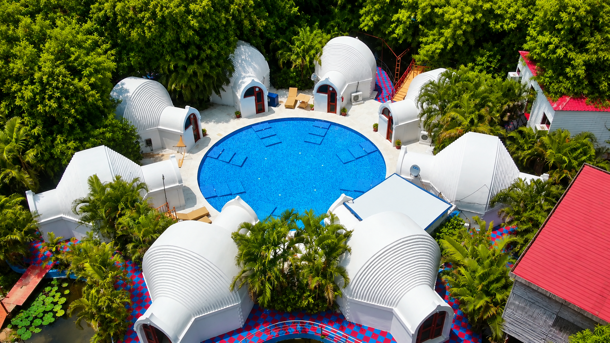

Live test block
If this photograph came in from the left and this panel came in from the right, meeting with the panel lapped over the picture, the animation is working.
This page loads your actual assets/css/site.css and
assets/js/site.js and reports what they are doing in this
browser. Safe to delete before you deploy.
Scroll down — the block below is a real one, wired to the real code. It should slide in from opposite sides and meet.

If this photograph came in from the left and this panel came in from the right, meeting with the panel lapped over the picture, the animation is working.
Scroll back up — the block should reset and replay.